System development submission
Dolphin Education
Digital System
Website, AI assistant and six portals in one secure system.
Presented by
Sujan Subedi
Founder, Zero Infinity Infotech
- Prepared for
- Dolphin Education
- Date
- 24 November 2026
- Live system
- dolphin-education.onrender.com
Agenda
1. Overview
- The system at a glance
- How the parts connect
2. Website
- Public website
- Managing website content
- AI assistant
3. Portals
- System admin
- Head office
- Branch
- Content manager
- Student and parent
4. Close
- Security
- Technology
- Status and next steps
The system at a glance
Website
- 17 pages
- English, Nepali, Spanish, Chinese
- Light and dark theme, phone-ready
AI assistant
- Answers on every page
- Hands over to the team
- Every chat saved
Six portals
- System admin, Head office, Branch
- Content manager, Student, Parent
- Each role sees only its work
One database
- Leads, files, documents, visa, fees
- Daily backups
- Full audit log
How the parts connect
One student file links the website, the branch, head office and the family.
- EnquiryVisitor
Reads the website or asks the assistant, then books a session.
- LeadBranch
The enquiry arrives in the branch with its chat history.
- Client fileBranch manager
Documents, applications, visa and fees in one file.
- PortalStudent and parent
Follow each step, upload documents, pay, message.
- OversightHead office
Sees every branch, reports and approvals.
01
Public website
What students and families see first.
Home page
City films, the main message and a booking button.
How it works
- 1
City films play behind the headline, each with its place name.
- 2
The booking button and the assistant are always one tap away.
- 3
Edited from the Content portal.
Used by every visitor

How we help
The three services, one at a time as the visitor scrolls.
How it works
- 1
Career counselling, documents and SOP, visa interview preparation.
- 2
Institution videos move with the scroll; a click plays one.
- 3
The same page works fully on a phone.
Used by every visitor


About
Who Dolphin Education is, with real team photos.
How it works
- 1
Team photos change every five seconds.
- 2
Key facts: service, offices, countries, licensed counsellors.
- 3
Partner logos open each institution's page.
Used by every visitor
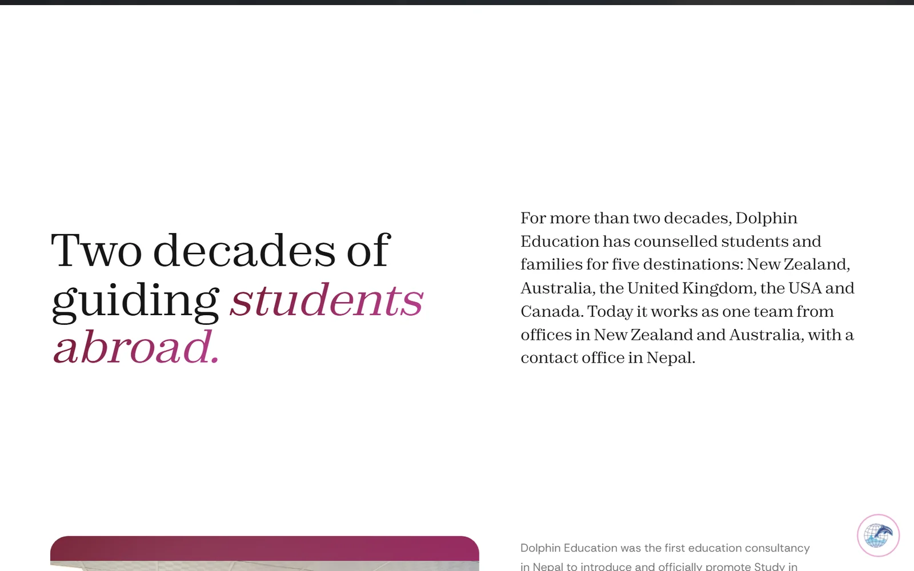
Licensed advisers
Licensed counsellors and immigration advisers.
How it works
- 1
Five licensed education counsellor cards.
- 2
Two Licensed Immigration Advisers, checked on the official register.
- 3
A link to verify each licence.
Used by every visitor
Why Dolphin
Four reasons, as an expanding photo gallery.
How it works
- 1
The open reason shows its full text.
- 2
Hover or tap opens another reason.
- 3
On phones the reasons stack as cards.
Used by every visitor
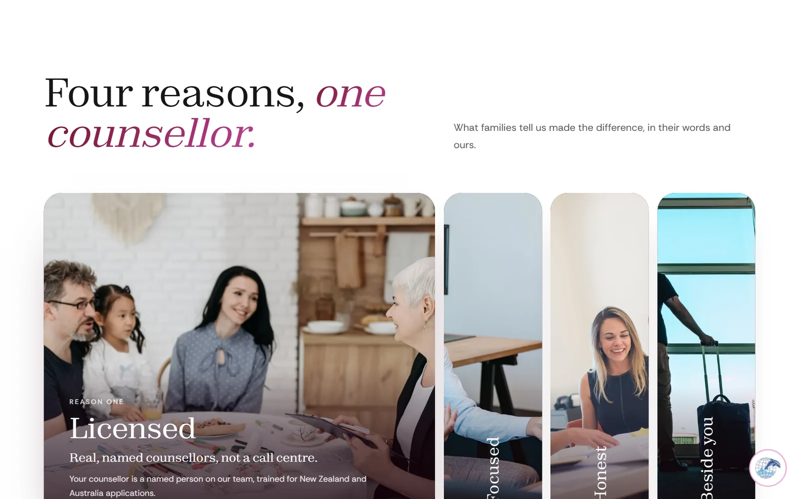
Student reviews
Real reviews from Dolphin's own reviews page.
How it works
- 1
A new review every five seconds, with a photo of the place.
- 2
Pauses when the mouse is over it.
- 3
Published only with consent.
Used by every visitor
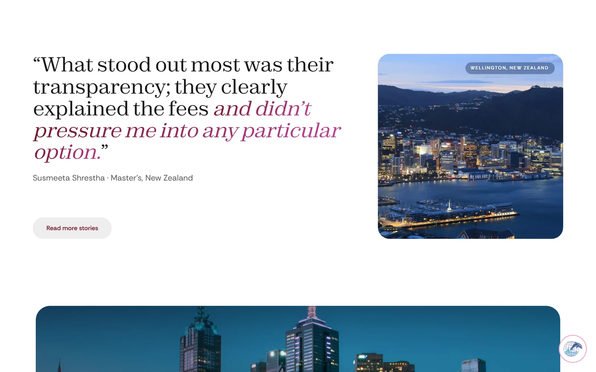
Destinations
Five destinations, New Zealand first.
How it works
- 1
Each destination opens its country page.
- 2
Country pages cover intakes and work rights.
- 3
Partner institutions listed per country.
Used by every visitor
Partner institutes
Every partner institution, by country.
How it works
- 1
Logos grouped by country.
- 2
Each logo opens the institution's page.
- 3
Dolphin also applies to institutions not listed.
Used by every visitor

Events and updates
Events, gallery, blog and videos.
How it works
- 1
Events show date, place and registration.
- 2
Blog guides on intakes, visas and courses.
- 3
Videos are hosted on Dolphin's own server.
Used by every visitor
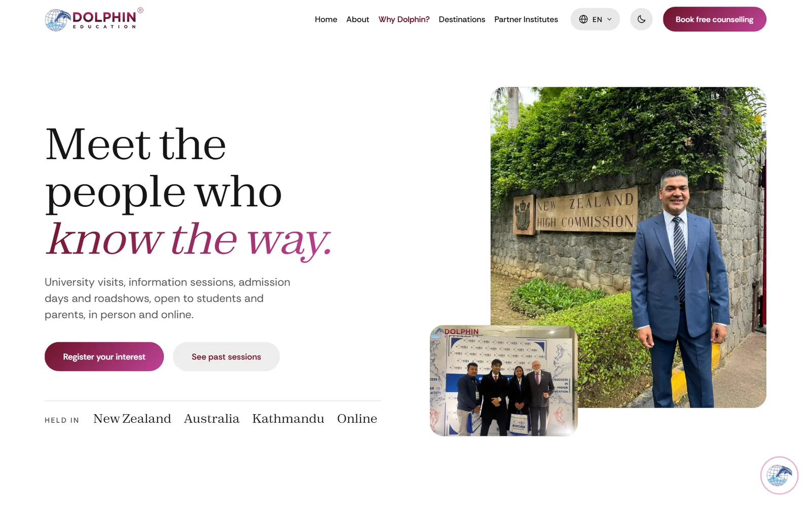
Contact
Booking form and office maps.
How it works
- 1
The form sends a booking to the branch as a lead.
- 2
Offices shown on Google maps.
- 3
Contact details come from Head office settings.
Used by every visitor

Privacy and cookies
Legal pages and a simple cookie notice.
How it works
- 1
Privacy policy and Terms of use, with contents.
- 2
Cookie notice shown once: essential cookies only.
- 3
No advertising or tracking.
Used by every visitor
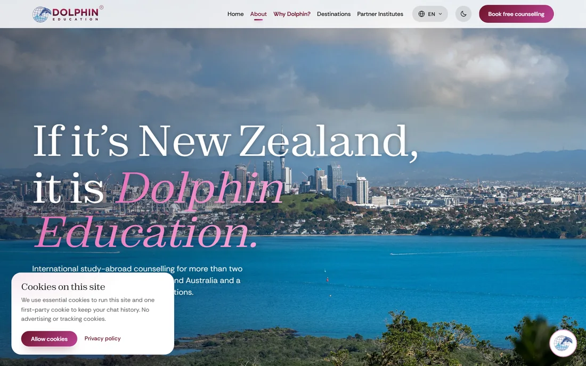
Dark theme and phones
Every page in light and dark, on any screen.
How it works
- 1
One tap switches the theme.
- 2
Every page is laid out for phones.
- 3
Available in four languages.
Used by every visitor

02
Managing website content
Dolphin's team updates the website without a developer.
From draft to live
Text, photos, events and stories change. Layout and design stay fixed.
- EditContent manager
Opens a section in the Content portal and edits it.
- Save draftContent manager
The change stays private.
- PublishContent manager
The change goes live at once and is recorded.
- ReviewHead office
Reads everything published; edits office details.
- ControlSystem admin
Can pause publishing for everyone.
Website content
Every changing part of the website.
How it works
- 1
Each block is listed with where it appears.
- 2
Open a block to edit text and photos.
- 3
Save draft, then publish.
Used by content managers
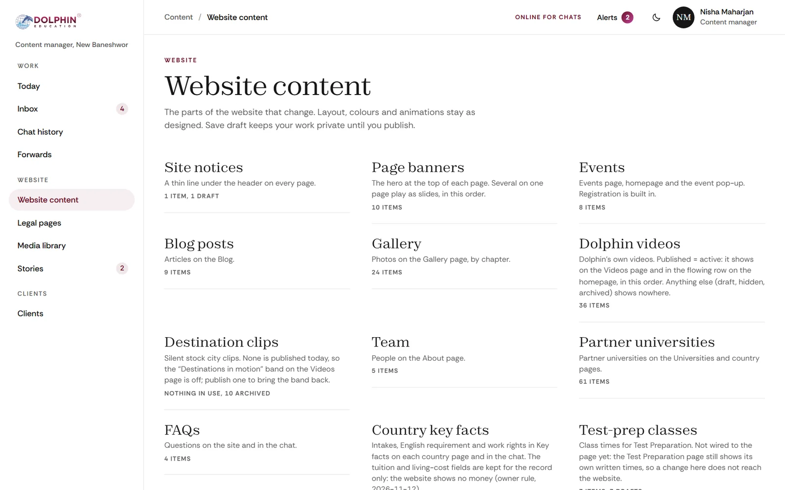
Media library
Photos, videos and PDFs for the website.
How it works
- 1
Drag files in to upload.
- 2
Each file has alt text and a focal point.
- 3
Shows where each file is used.
Used by content managers
Stories
Student and parent stories, with consent.
How it works
- 1
New stories wait for review.
- 2
Approved only with the consent date.
- 3
Approved stories appear on the website.
Used by content managers
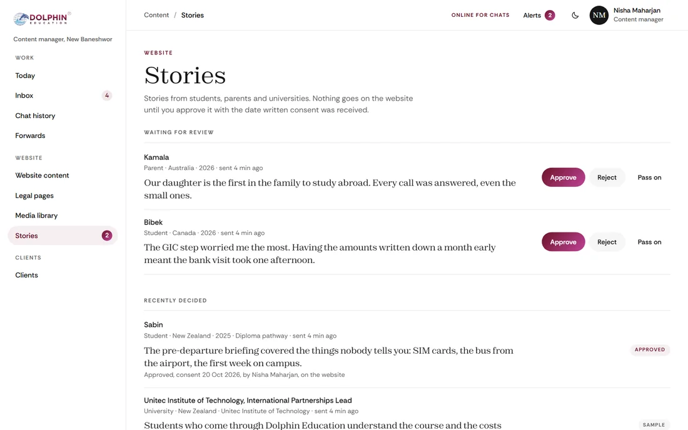
Legal pages
Privacy policy and Terms of use.
How it works
- 1
Edit each section of the text.
- 2
Linked from every page footer and form.
- 3
"Last updated" changes on publish.
Used by content managers
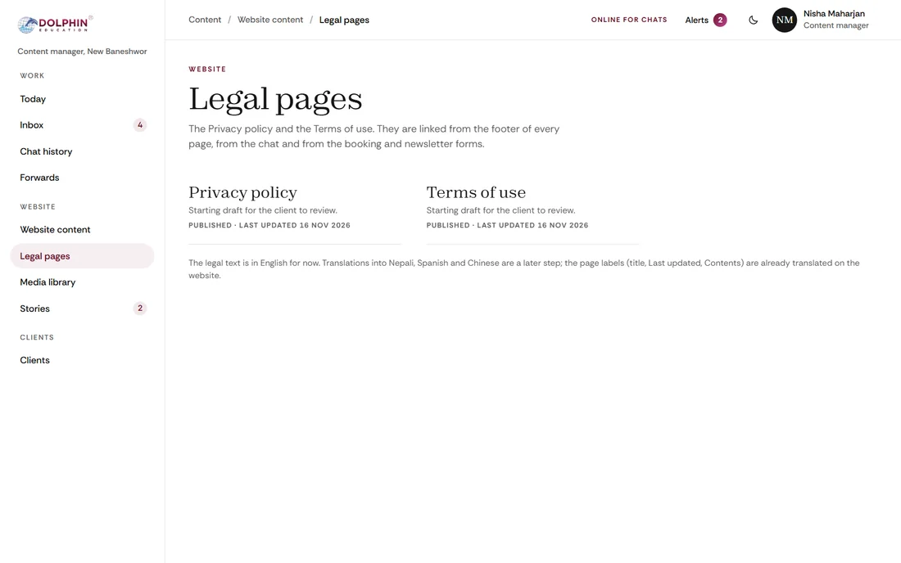
03
AI assistant
Answers any time and hands over to a person.
Asha, the assistant
A chat on every page, in four languages.
How it works
- 1
Answers from Dolphin's own information.
- 2
Listen to answers or ask by voice.
- 3
Earlier chats stay in the visitor's browser.
Used by every visitor
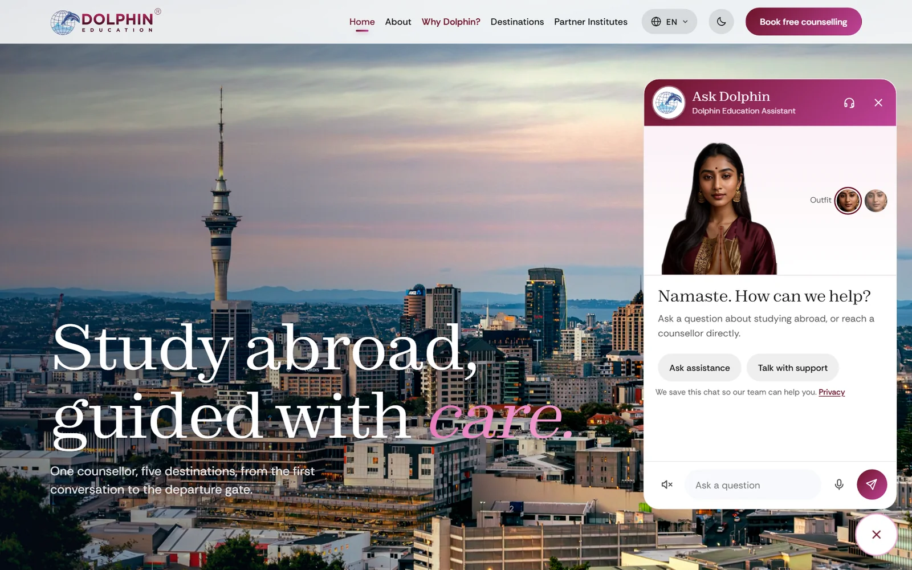

From chat to the team
The assistant answers first. The team takes over when needed.
- AskVisitor
Asks a question on any page.
- AnswerAssistant
Answers in the visitor's language.
- Hand overVisitor
Taps "Talk with support".
- ReplyTeam
Replies from the Conversations inbox.
- SavedSystem
Kept in Chat history, linked to the lead.
The six portals
Everyone signs in to their own portal and sees only their own work.
| Portal | Who | Purpose |
|---|---|---|
| System admin | IT or developer | Server, people, branches, switches, audit, backups |
| Head office | Management | All branches: clients, visa, money, approvals, users |
| Branch | Branch head and manager | Client files, leads, documents, calendar, fees, reports |
| Content manager | Website and front desk | Website content, media, stories, inbox |
| Student | Students | Journey, documents, visa, payments, messages |
| Parent | Parents | Follow the child's file, pay, message, family chat |
| Paused | Counsellor, visa officer, university | Built, switched off on request |
Sign-in
Each portal has its own sign-in page.
How it works
- 1
Email and password typed each time.
- 2
System admin also uses a one-time code.
- 3
Every sign-in is recorded.
Used by everyone with an account

04
System admin portal
Keeps the system healthy and safe.
Overview
System health right now.
How it works
- 1
Alerts, server health and people online.
- 2
Refreshes every 15 seconds.
- 3
Problems shown first.
Used by system admin

Live conversations
All open chats in every branch.
How it works
- 1
Read only by default.
- 2
Join only when a branch needs help.
- 3
Joining is recorded.
Used by system admin
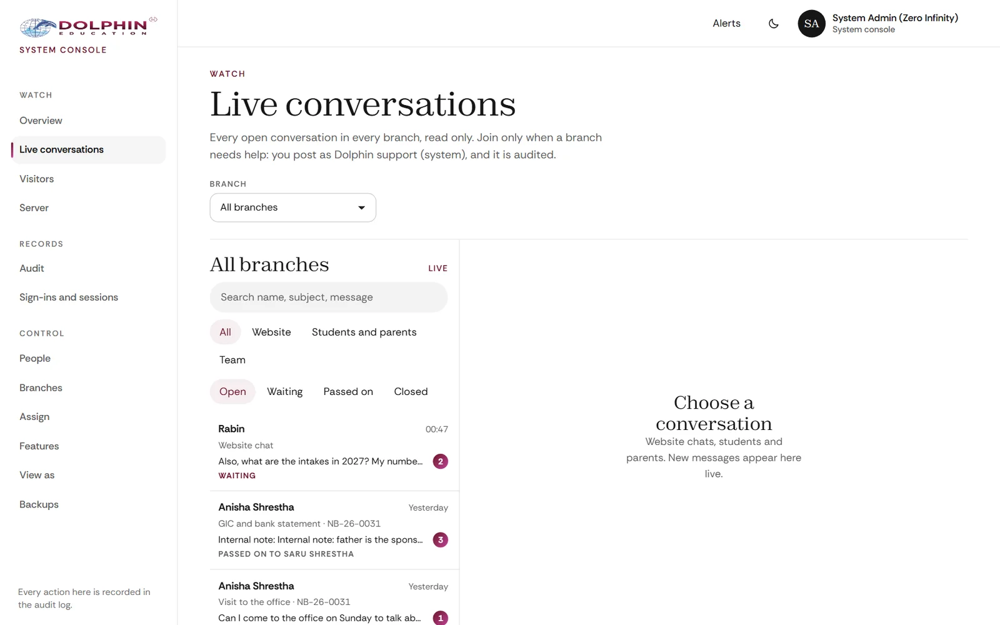
People
Every account in every branch.
How it works
- 1
Create, edit or pause staff accounts.
- 2
Staffing limits per branch.
- 3
Admin accounts only on the server.
Used by system admin
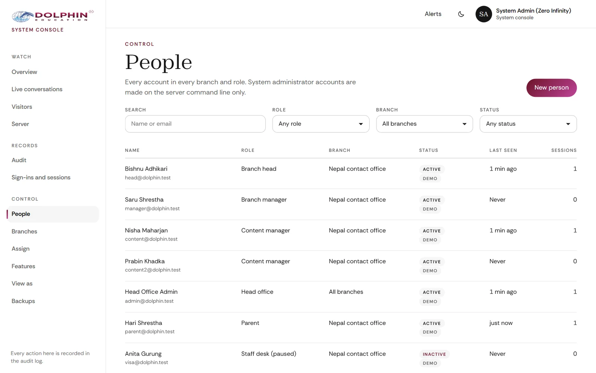
Assign
Move work between branches or people.
How it works
- 1
Select files, leads or chats.
- 2
Choose where they go.
- 3
A reason is kept in the audit log.
Used by system admin
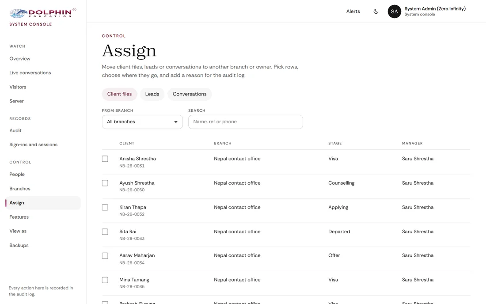
Feature switches
Turn features on or off for everyone.
How it works
- 1
Live chat, maintenance mode, publishing.
- 2
Switch paused portals back on.
- 3
Every switch is recorded.
Used by system admin

View as
See a portal as its user sees it.
How it works
- 1
Choose a person and give a reason.
- 2
Opens read only, with a banner.
- 3
Every view is recorded.
Used by system admin

Audit
Every change, with before and after.
How it works
- 1
Who changed what, and when.
- 2
Every sign-in attempt.
- 3
Personal details stored as protected codes.
Used by system admin
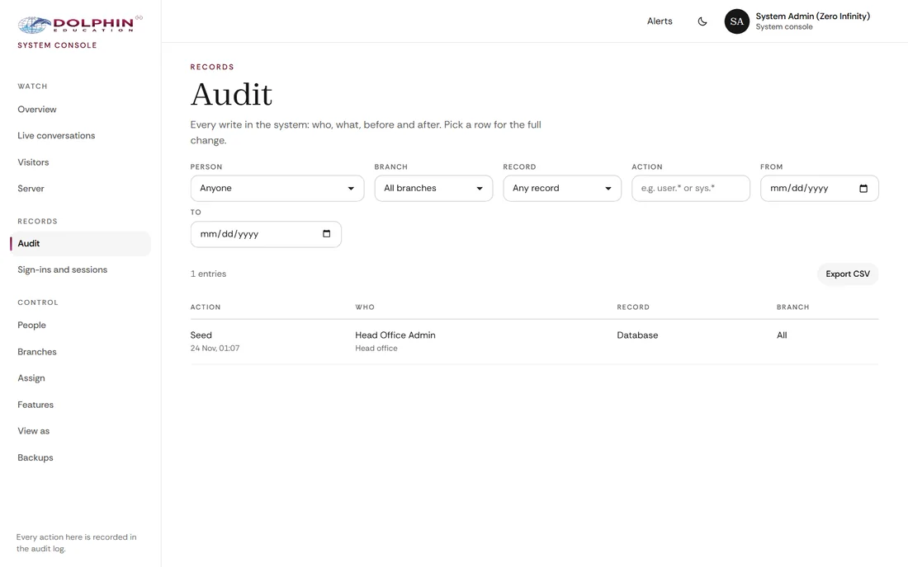
Backups
Daily copies of all data.
How it works
- 1
Database and files copied every day.
- 2
Kept for 30 days.
- 3
Restored by the developers when needed.
Used by system admin
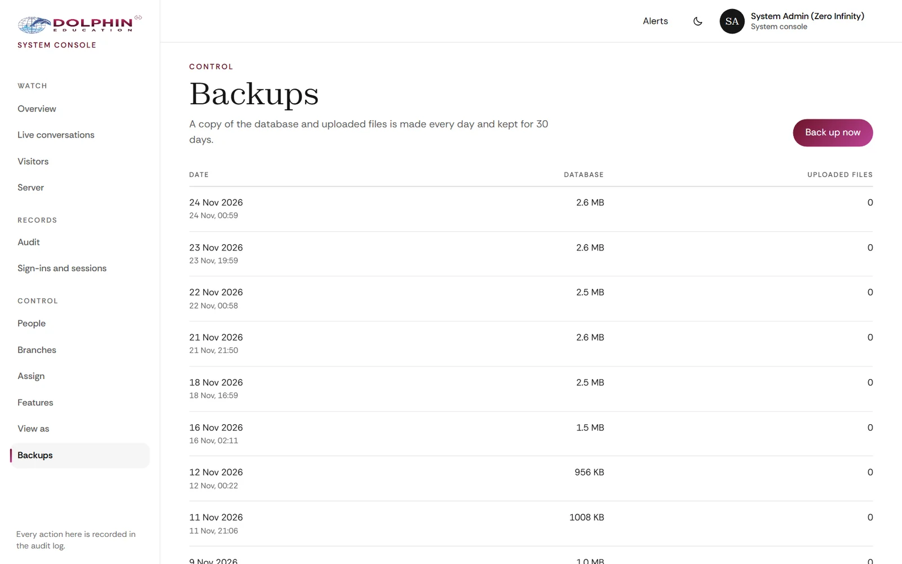
05
Head office portal
Management sees every branch.
Overview
All branches at a glance.
How it works
- 1
Enquiries, clients, applications and money.
- 2
Eight-week trends.
- 3
"Needs attention" shows waiting work.
Used by head office

Clients
Every client file in every branch.
How it works
- 1
Search by name, reference, phone or passport.
- 2
Filter by branch, stage, destination.
- 3
Opening a file is recorded.
Used by head office
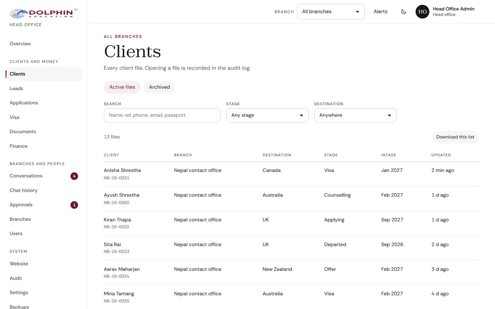
Leads
All enquiries.
How it works
- 1
From website, chat, events and office.
- 2
Branches work them; head office reads.
- 3
A lead becomes a client file on sign-up.
Used by head office
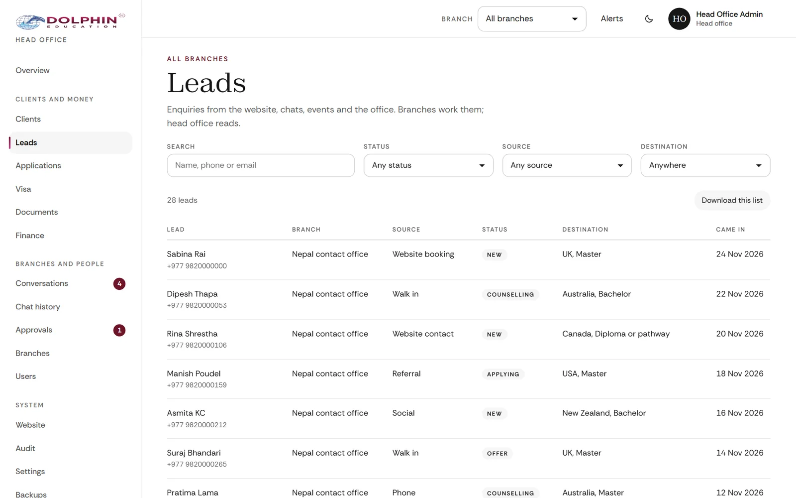
Visa
Visa steps across branches.
How it works
- 1
Overdue steps first.
- 2
Applications and offers in a separate list.
- 3
Branches update steps on the client file.
Used by head office
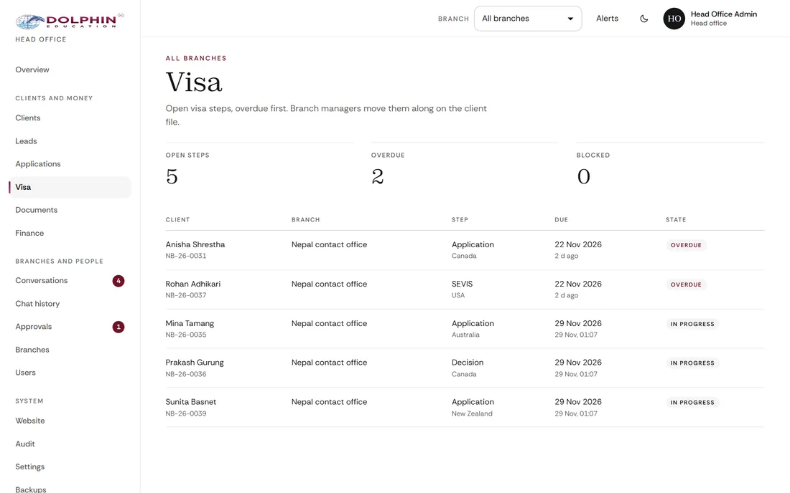
Finance
Fees and payments by branch.
How it works
- 1
Collected, due and claimed.
- 2
Read only for head office.
- 3
Branches record payments and receipts.
Used by head office

Approvals
Sensitive requests and decisions.
How it works
- 1
Fee reductions, refunds, archiving.
- 2
Decided by the branch head.
- 3
Every decision is visible here.
Used by head office

Conversations
Every conversation in the branches.
How it works
- 1
Read and add internal notes.
- 2
Hand a conversation to someone else.
- 3
Chat history shows every website chat.
Used by head office
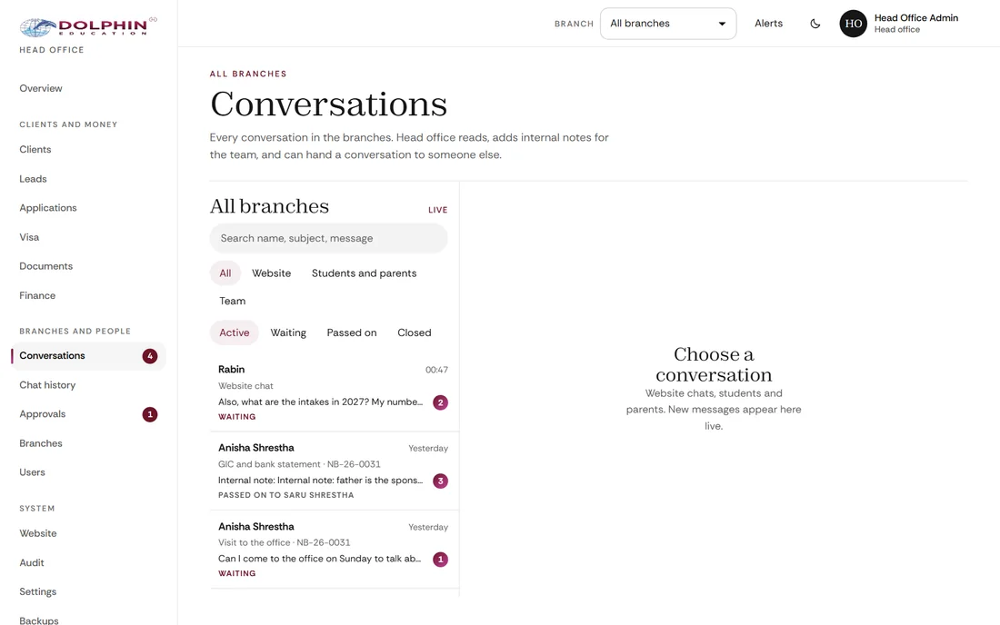
Users and settings
People and office details.
How it works
- 1
One head, one manager, up to two content managers per branch.
- 2
Office details for the website.
- 3
Receipt details.
Used by head office

06
Branch portal
Daily work with students and families.
Today
What is waiting today.
How it works
- 1
Approvals, escalations, appointments, visa steps due.
- 2
Badges show unread messages.
- 3
Each role sees its own tasks.
Used by branch head and manager

Client files
Every student in the branch.
How it works
- 1
Search and filter.
- 2
Create a new client file.
- 3
Open a file to work on it.
Used by branch head and manager
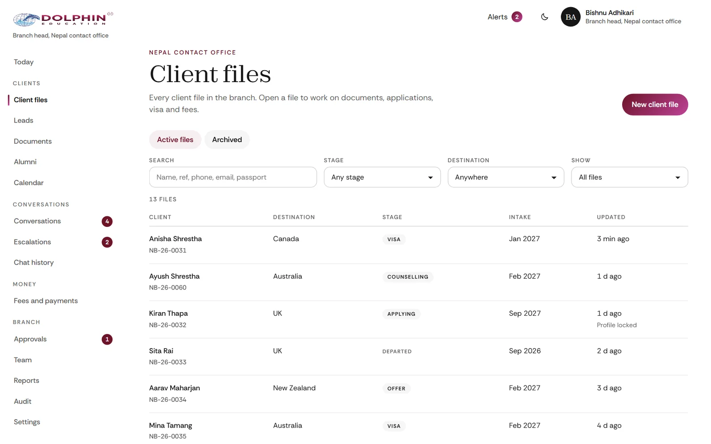
Client file
Everything about one student.
How it works
- 1
Tabs: overview, profile, documents, applications, visa, fees.
- 2
Message, request a document, lock the profile.
- 3
Export a summary or verified documents.
Used by branch manager
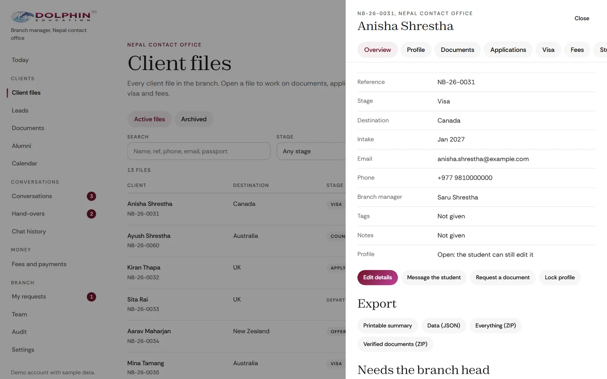
Documents
Request, check and verify.
How it works
- 1
Request a document; the student is notified.
- 2
Verify each upload or ask again.
- 3
Expiring documents are flagged.
Used by branch manager
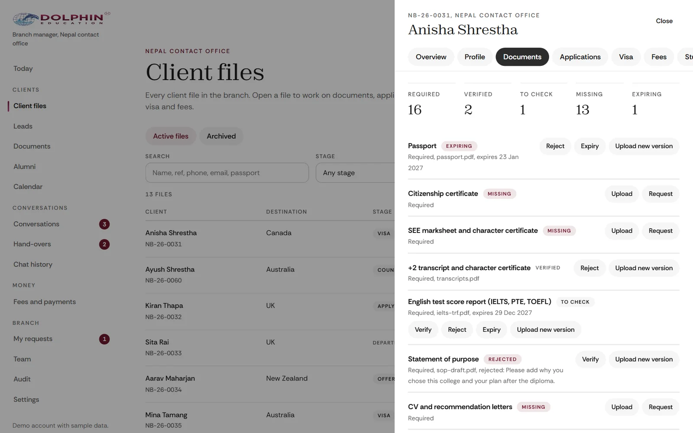
Applications
University applications and offers.
How it works
- 1
Add institution, course and intake.
- 2
Update the status to offer.
- 3
Offer letters shared with the family.
Used by branch manager

Visa
Visa steps for the destination.
How it works
- 1
Steps in order, with due dates.
- 2
Mark each step done.
- 3
The family sees the same steps.
Used by branch manager
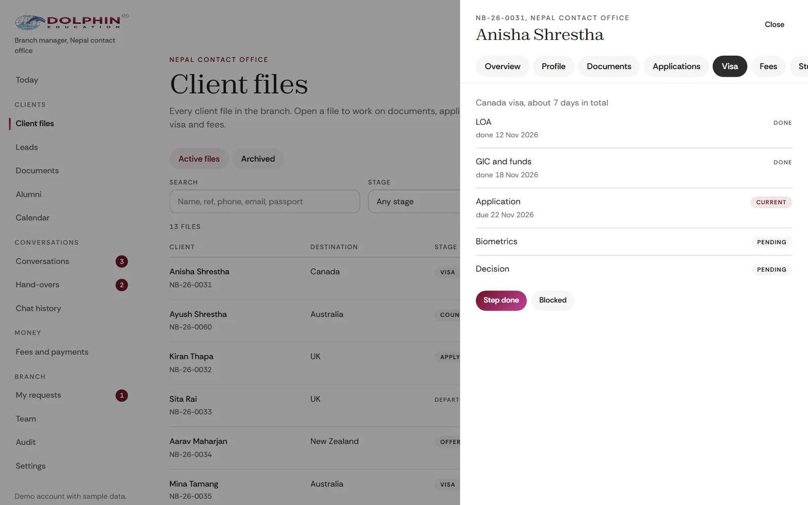
Fees
Fees, payments and receipts.
How it works
- 1
Add fees and record payments.
- 2
Confirm payments reported by families.
- 3
Reductions need branch head approval.
Used by branch manager
Leads
Enquiries for the branch.
How it works
- 1
From website, chat, events, office.
- 2
Follow up and add notes.
- 3
Convert to a client file.
Used by branch manager
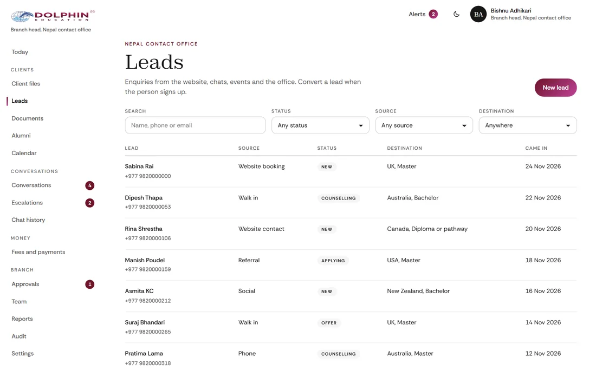
Calendar
Branch appointments.
How it works
- 1
Two weeks at a time.
- 2
Book sessions and visits.
- 3
Students see their appointments.
Used by branch head and manager
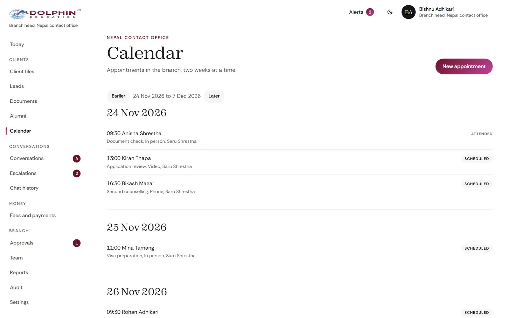
Conversations
Messages and handed-over chats.
How it works
- 1
Students, parents and website visitors.
- 2
Internal notes for the team only.
- 3
Escalations: accept, finish or return.
Used by branch head and manager
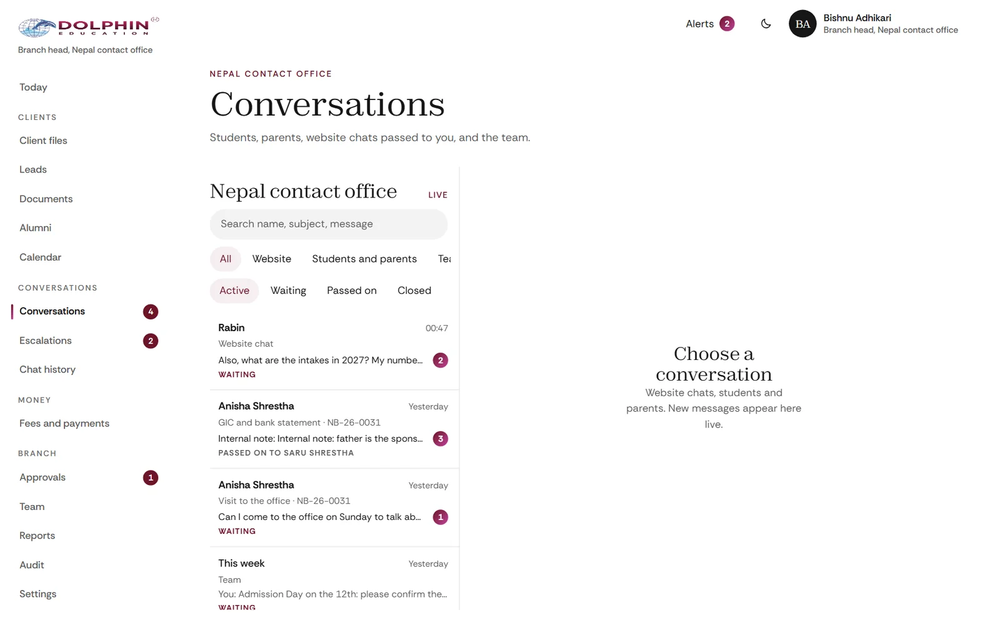
Reports
How the branch is doing.
How it works
- 1
Enquiries, new clients, fees collected.
- 2
Week by week.
- 3
Team list and receipt settings nearby.
Used by branch head
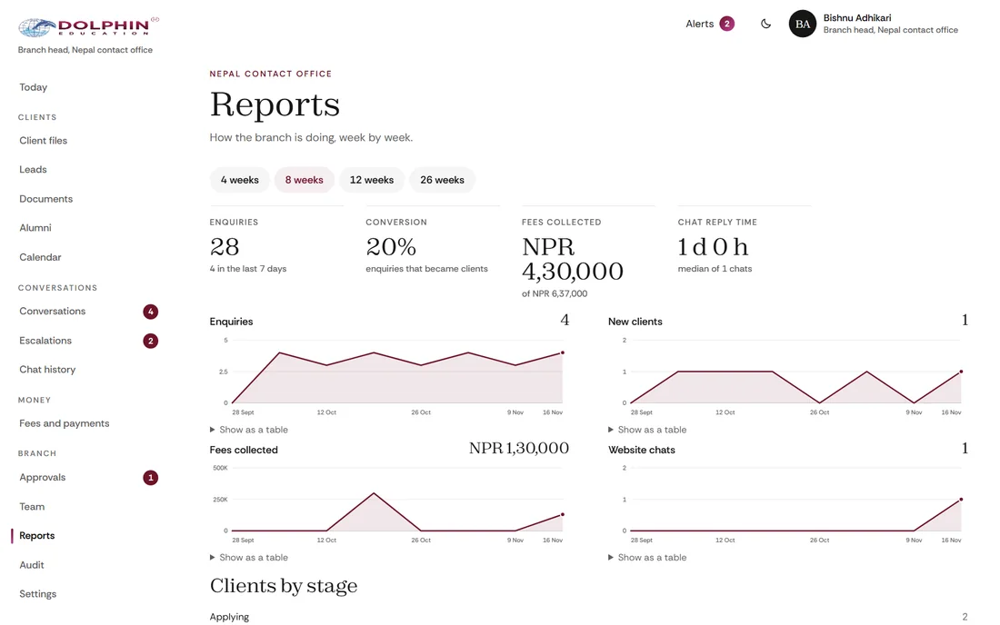
How approvals work
Sensitive changes need a second person.
- RequestBranch manager
Asks with a reason.
- DecideBranch head
Approves or declines.
- ApplySystem
Applied to the file at once.
- RecordHead office
Visible and kept in the audit log.
07
Content manager portal
Website and front desk.
Today
What is waiting.
How it works
- 1
Website chats, messages, document requests.
- 2
Each item opens in the right place.
- 3
Works on a phone.
Used by content managers
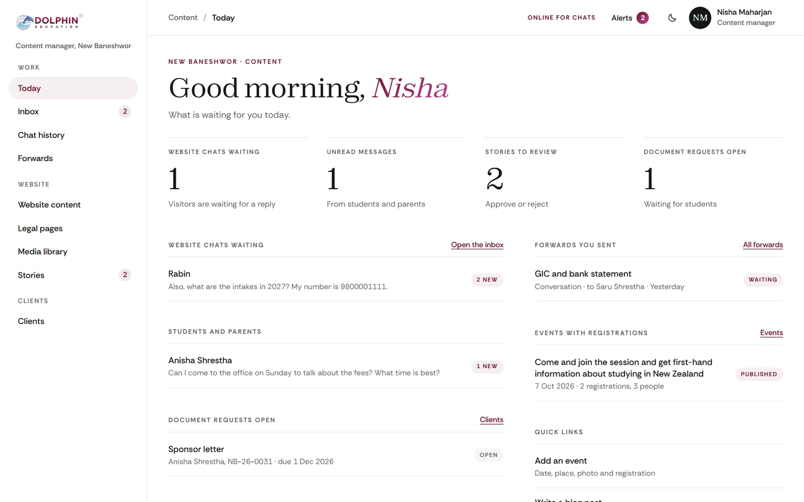
Inbox
Reply to chats and messages.
How it works
- 1
Website visitors, students and parents.
- 2
Sensitive items forwarded to the branch manager.
- 3
Forwards shows what happened next.
Used by content managers
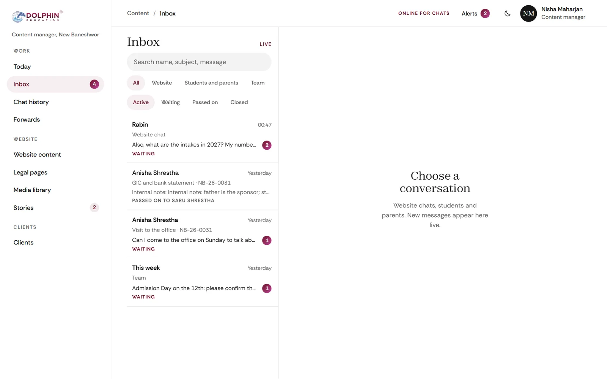
08
Student and parent portals
Families follow every step.
Student home
The whole journey on one screen.
How it works
- 1
Current stage and next steps.
- 2
The Dolphin team looking after them.
- 3
Works fully on a phone.
Used by students
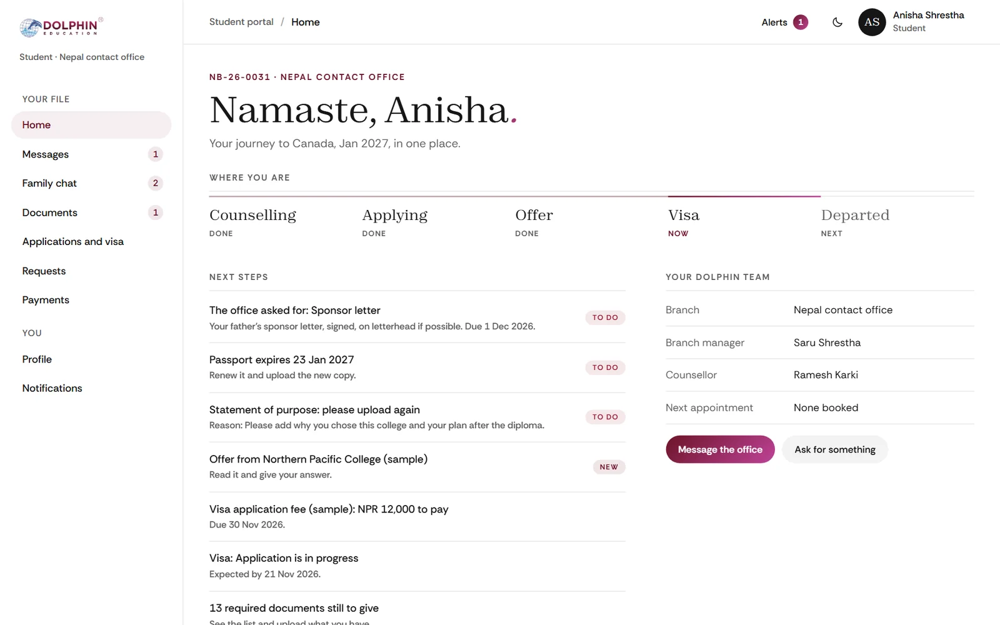
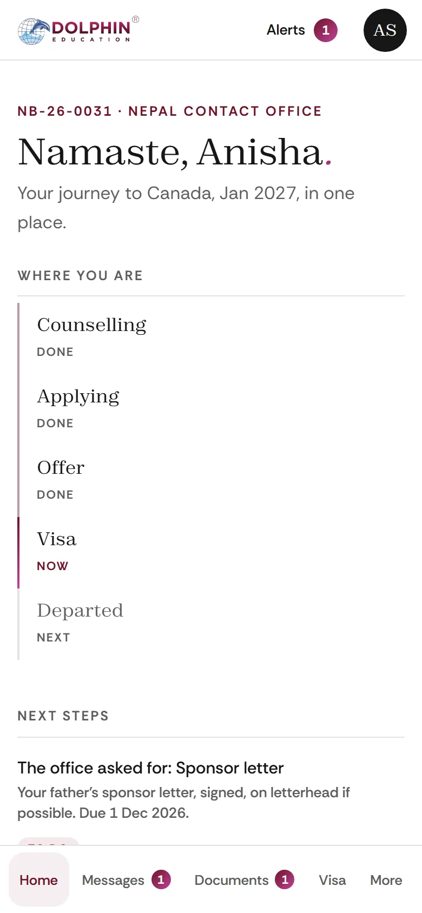
Documents
Upload and track documents.
How it works
- 1
Grouped: identity, academic, English test.
- 2
PDF, JPG or PNG up to 10 MB.
- 3
The office checks each one.
Used by students
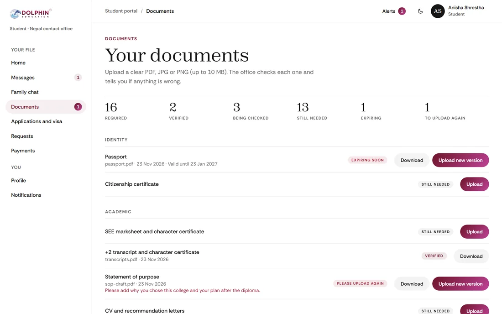
Applications and visa
Status of every application and visa step.
How it works
- 1
Applications and offer letters.
- 2
Visa steps: done and next.
- 3
Same as the branch sees.
Used by students

Requests and messages
Talk to the office.
How it works
- 1
What the office asked for.
- 2
Ask the office; answers arrive in Messages.
- 3
Notifications, newest first.
Used by students
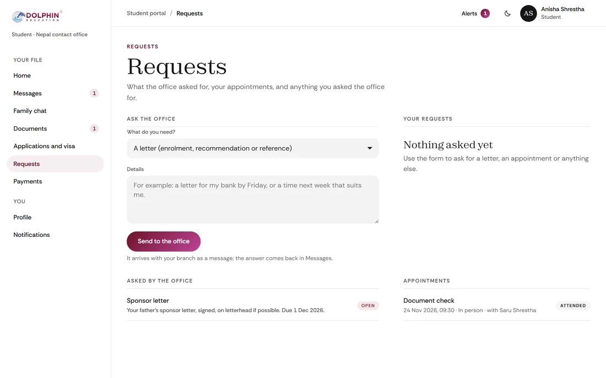
Fees and receipts
Paid, due and receipts.
How it works
- 1
Each fee and what is left to pay.
- 2
Receipts for every payment.
- 3
Report a bank payment for confirmation.
Used by students and parents

Parent portal
Parents follow their child's file.
How it works
- 1
Read everything on the file.
- 2
Switch between children.
- 3
Private family chat with the student.
Used by parents
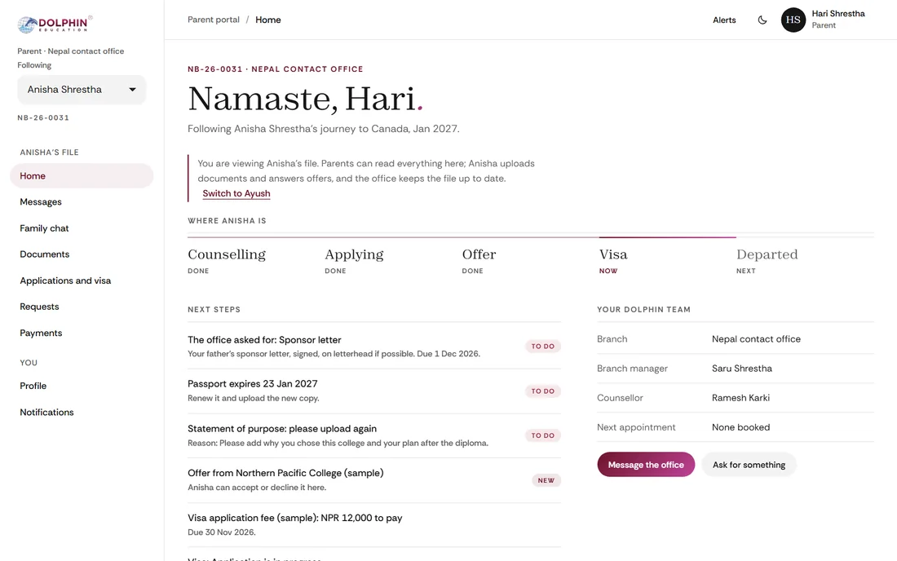
How documents and payments flow
Family and branch work on the same file.
- RequestBranch manager
Requests a document or adds a fee.
- NotifySystem
The family is notified.
- SendStudent or parent
Uploads, or pays and reports it.
- CheckBranch manager
Verifies or confirms with a receipt.
- UpdatedEveryone
Family, branch and head office see it at once.
Security
Access
- Each role sees only its work
- One-time code for system admin
- No saved passwords on sign-in
Records
- Every change recorded
- Every sign-in recorded
- File opens recorded
Protection
- Daily backups, 30 days
- Strict browser security
- No tracking cookies
Privacy
- Private family chat
- Stories need consent
- Clear privacy policy
Technology
Platform
- Node.js and SQLite
- Cloud hosting on Render
- Local copy for testing
Quality
- 222 automated tests
- Checked on phone and computer
- Optimised images
Languages
- English, Nepali, Spanish, Chinese
Assistant
- Gemini and Groq models
- Dolphin's own information
- Voice in and out
Status and next steps
Ready
- Live at dolphin-education.onrender.com
- All portals tested
- Test logins shared with developers
To switch on
- AI keys on the live server
- Office email
- Real accounts and data
From Dolphin
- Consent for published reviews
- Final photos
- Office hours
Paused
- Counsellor and visa desks
- University partner portal
Thank you
Questions and a live walk-through of any portal.
Presented by
Sujan Subedi
Founder, Zero Infinity Infotech
- Live system
- dolphin-education.onrender.com